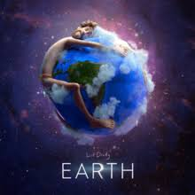

|  | EARTH- A Platform to connect |
Earth is a social website which connects the different NGO's together on a single platform who are helping the people affected by NATURAL DISASTERS .
As we know there are lot of natural clamties are happening around the world and it is very difficut by the government to look after them simultneously. SO NGO's are the orgsanisation which look after them and they provide the basic amenities to the affected. But differnt NGO organisations work themselves instead co-operating the other NGO's who are hrlping at the same place which will overcome their load quickly and will be able to help affecties quickly. Basically EARTH is a platform which will connect these NGO's and interested person who want to devote for the society at a single platform and will collaborate them to wok together.
Lists of work done by NGO's: |
| Cleaning |
| Resuce |
| Clothes to poor |
| Food to the affectie |
| more |